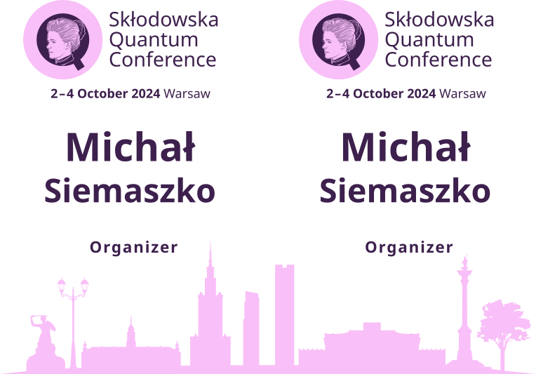

Skłodowska Quantum Conference
4 October 2024
We have just finished the Skłodowska Quantum Conference. It was a great experience to learn many new things. My main responsibility was a conference website. It was a great motivation to refresh HTML and CSS. It actually helped me with making my own website (the one you are now on). I basically copied the style from the conference website to mine.
Besides being a web developer, I was also part time a graphic designer. Together with my team we came up with the design for conference badges, lanyards and stickers. We did all the work in Inkscape. It was also a good opportunity to teach my friends some of the new things I learned. Best part was scripting to get all the badges with different names with one click.

Besides this we heavily used Google Docs, Sheets and Forms to process all the data from participants.
Finally, we did not only make everything in the computer, but we eventually tested it in reality. Our website and tables came really handy during the conference. Overall organizing the conference is exhausting but amazing experience. 100% recommend.